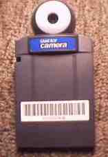
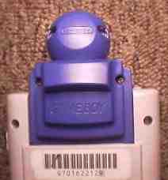

It's a camera! It's a game!
It's hackable! Hmmmm...
The
Game Boy Camera is available right now for fifty bucks. It can take and
store 30 black and white images, and has an impressive collection of fun
image manipulation tools. Images can be flipped, mirrored, and stretched.
You can draw on them, or stamp them with a wide variety of clip art and
fonts. You can combine four images to make a wide (or tall) panorama. And
you can set it up to do time lapse with interval adjustable from 1 second
to 1 hour. You can combine images to make a montage or animation. You can
add notation to each image. And you can put your face onto a game character
in three included games. You can print out your creations using an accessory
printer, or transfer them to another game boy (equipped with the camera)
using a serial link cable. There's even a music editor which allows you
to compose your own music. And all this is done the way Nintendo does things:
it's fun and funky. Every screen has a different musical theme (you can
choose from 30 different musical backgrounds to accompany you animation).
And there are all kinds of weird graphics for each sub-menu.
Hackability?
Now that I've got the description of what it is out of the way, let's roll
up our sleeves and see what it could be...
It can hold 30 pictures in battery backed ram. That implies at least
64k bytes, but after a peek inside, it looks like it has 128k bytes!
Hmmm... The impressive collection of image manipulation tools , along with
fonts, clip art, and other images implies that there may be as much as
1 M byte of rom. Each unit has a unique ID number accessible from a menu.
The ROM is not programmable, so
the ID must be in battery-backed ram. With the camera disconnected from the
board, the connector might be used for general I/O for data acqisition
or control. Hmmmm...
The camera itself is in a rotatable spherical pod, about 1.25 inch
in diameter. It contains a 16-pin sensor with a
Mitsubishi logo, labeled 282 81DH. This part is not a CCD chip,
but a new device from Mitsubishi, M64282FP, the "Artificial
Retina".Not only can sense an image, but it can process it as well,
doing such things as edge detection. It connects to the board in the
cartridge with a 9-pin connector, and probably could be extended
for remote viewing. Hmmm...
The camera itself is quite sensitive and can create a good image
in low light. It can even detect infrared, and take a picture by
the (IR)light of a TV remote. Again, hmmm...
Even if we don't chop the thing up, it is still hackable, by figuring
out the protocol for image transfer. Then you could upload images to be
printed or put up on web pages, maybe even aimated GIFs! Once more, hmmm...
What does this have to do with Game Boy Camera? Nothing. But I received a
number of inquiries about using the GB camera (or its sensor) for robot
vision or astrophotography. The QuickCam is just as cheap, already
interfaced to a parallel port, and documented. But we need to keep
digging and find out as much as we can about the GB Camera.
Please email
me with questions, comments, or info.
{kind=link}